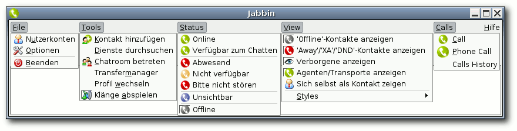
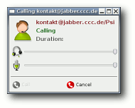
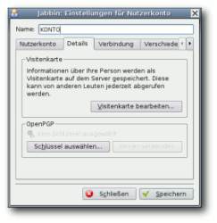

Jabbin
Archivierte Anleitung
Dieser Artikel wurde archiviert, da er - oder Teile daraus - nur noch unter einer älteren Ubuntu-Version nutzbar ist. Diese Anleitung wird vom Wiki-Team weder auf Richtigkeit überprüft noch anderweitig gepflegt. Zusätzlich wurde der Artikel für weitere Änderungen gesperrt.
Zum Verständnis dieses Artikels sind folgende Seiten hilfreich:
Jabbin ist ein freier und auf QT basierender VoIP Client für das Jabber-Protokoll. Er basiert auf dem freien Instant Messenger Psi, weshalb das Aussehen und die Einstellungsmöglichkeiten identisch sind. Der entscheidende Unterschied ist die Implementierung von libjingle. Auf diesen Bibliotheken aufbauend ist man mit Jabbin in der Lage mit anderen Kontakten über das Jabber-Protokoll zu sprechen.
Installation¶
Per DEB-Paket¶
Hinweis!
Fremdpakete können das System gefährden.
Für die Installation muss man das neuste DEB-Paket jabbin_<VERSION>.deb für Ubuntu von der Downloadseite  herunterladen und installieren [1].
herunterladen und installieren [1].
Nach erfolgreicher Installation lässt sich das Spiel über "Anwendungen -> Internet -> Jabbin" bzw. K-Menü/Xfce-Menü -> "Internet -> Jabbin" starten.
Aus dem Archiv¶
Zuerst lädt man sich das neuste Archiv jabbin-<VERSION>.tar.bz2 von Downloadseite herunter und entpackt es mit einem Packprogramm [2].
Anschließend wechselt man in das erzeugte Verzeichnis jabbin-<VERSION> und führt den Starter Jabbin aus.
Einer Sprachdatei¶
Da Jabbin außer "English" noch keine weiteren Sprachdateien besitzt, kann man alternativ die Sprachdatei von Psi benutzen. Hierzu lädt man sich von der Downloadseite (Psi) die entsprechende Sprachdatei (psi_xy.qm) herunter und verschiebt sie in das versteckte Verzeichnis .psi im Home-Verzeichnis.
Nach einem Neustart der Anwendung sollten, bis auf die Menüleiste, alle Menüelemente in der entsprechenden Sprache verfügbar sein.
Benutzung/Konfiguration¶
Die Konfiguration von Jabbin entspricht der von Psi, jedoch haben sich die Entwickler von Jabbin dazu entschieden eine neue Oberfläche für die Kontaktliste zu gestalten. Deshalb findet man nicht das in Psi verwendetet Hauptmenü, sondern eine Menüleiste, in der die einzelnen Menüelemente zu finden sind.

Konto erstellen/hinzufügen¶
Um ein neues Konto nach dem ersten Programmstart zu erstellen, muss man nur der Anleitung im Artikel Psi folgen.
Falls man ein zusätzliches Konto in die Kontoverwaltung hinzufügen möchte, öffnet man das entsprechende Fenster über "File -> Nutzerkonto".
Kontakt hinzufügen¶
Kontakte lassen sich ganz einfach über den Button "Kontakt hinzufügen" in der Kontaktliste oder über die Menüleiste "Tools -> Kontakt hinzufügen" hinzufügen. Anschließend muss man nur noch die Jabber-ID, einen optionalen Spitznamen und die Gruppe, in der der Kontakt hinzugefügt werden soll, eingetragen und mit "Hinzufügen" bestätigt werden.
Verbindungsstatus¶
Die nach der Installation vorhandenen Verbindungsstatus sind selbsterklärend. Aber Jabbin bietet, genau wie Psi, die Möglichkeit eigene Status zu erstellen. Dazu klickt man unter "File" auf "Optionen", wählt links den Abschnitt "Status" und klickt unter "Vorgaben" auf "Neu". Nun gibt man einen Namen für den Status ein. Danach muss man noch den Inhalt dieses Status in das Textfeld unten eingeben. Der Text wird automatisch gespeichert, ein Klick auf "OK" genügt.
Transport für andere Protokolle einrichten¶
Hinweis:
Transports lassen sich nur auf dem Server einrichten, auf dem man auch ein Jabber-Konto eingerichtet hat. Deshalb sollte man sich vorher überlegen, welche Fähigkeiten ein Server haben sollte. Bei manchen Jabber-Servern kann es dazu kommen, dass die Nachrichten bei protokollübergreifenden Unterhaltungen um einige Sekunden verspätet ankommen.
Die Vorgehensweise entspricht der von "Kontakt suchen". "Tools -> Dienste durchsuchen -> Adresse: Liste von Jabberservern -> Durchsuchen". Abhängig von den Fähigkeiten des Servers erscheinen nun Dienste wie: ICQ-Transport oder IRC-Transport. Andere Protokolle wie z.B. MSN, Yahoo! oder AIM werden gegebenenfalls auch unterstützt. "Protokoll auswählen -> Registrieren -> Zugangsdaten des jeweiligen Protokolls eingeben -> Registrieren". Der Zugang ist nun eingerichtet und eventuell vorhandene Kontakte werden der Liste hinzugefügt.
Nachrichten senden/Kontakte anrufen¶
Um eine Nachricht zu senden hat man zwei Optionen. Zum einen kann eine einzelne Nachricht gesendet oder aber ein Chat  eröffnet werden. Die Auswahl erscheint bei einem "Rechtsklick" auf den Kontakt. Bei einem doppelten "Linksklick" öffnet sich direkt das Chatfenster.
Nachrichten die im unteren Textfeld des Chatfensters eingegeben wurden, schickt man einfach in dem man die ⏎ -Taste betätigt.
Wenn man einen Kontakt anrufen möchte, wählt man statt "Chat-Fenster öffnen" einfach "Make Call". Im darauf erscheinenden Fenster kann man nun die Lautstärke für Kopfhörer und die Verstärkung des Mikrophones einstellen, mit "Call" den Kontakt anrufen und mit "Cancel" die Unterhaltung beenden.
Hinweis:
Voraussetzung, um mit anderen Kontakten reden zu können ist, dass der Kontakt einen Instant Messenger mit libjingle-Unterstützung besitzt.
Kontakte gruppieren¶
Um den Überblick zu behalten, empfiehlt es sich die Kontakte in Gruppen einzuteilen. So kann man z.B. eine Liste "Ubuntuusers" erstellen und in ihr alle Kontakte aus diesem Forum ablegen. Hierzu einen "Rechtsklick" auf dem "Kontakt" ausführen, dann "Gruppe -> Neu erstellen..." und einen treffenden Namen eingeben oder einer bereits existierenden Gruppe zuordnen. Vorteil: Man kann eine Nachricht an alle Mitglieder der Gruppe senden.
Jabbin anpassen¶
Im Gegensatz zu Psi ist Jabbin weniger konfigurierbar. Dies zeigt sich daran, dass man die Symbolleisten nicht verändern kann. Schriftarten und Farben, Emoticons, Listenicons und Systemicons lassen sich jedoch weiterhin unter "File -> Optionen -> Aussehen" anpassen.
Zusätzliche Icons können in /usr/share/jabbin/iconsets und dem entsprechenden Unterordner (emoticons, roster, system) hinzugefügt werden.
Verschlüsselung¶
Mit SSL¶
"File -> Nutzerkonto -> Konto auswählen -> Ändern -> Verbindung" und "SSL-Verschlüsselung verwenden" und "SSL-Warnungen ignorieren" anklicken. 
Mit OpenPGP/GnuPG¶
Da die Daten mit SSL nur zum Server verschlüsselt werden und nicht von Server zu Server, kann man zusätzlich noch die Nachrichten mittels OpenPGP verschlüsseln. Hierzu muss man sich einen öffentlichen und einen privaten Schlüssel für die Jabber-ID erstellen. Wie solch ein Schlüssel generiert wird, erfährt man im Artikel GnuPG im Abschnitt Schlüsselpaar erzeugen. An der Stelle, wo die Email-Adresse eingegeben werden soll, muss nun die Jabber-ID (BENUTZER@SERVER) eingegeben werden. Anschließend müssen nur noch folgende Schritte getätigt werden:
"File -> Nutzerkonto -> Konto auswählen -> Ändern -> Details" und "Schlüssel auswählen" und den entsprechenden Schlüssel auswählen.
 - SourceForge
- SourceForge - Erstellt mit Inyoka
-
 2004 – 2017 ubuntuusers.de • Einige Rechte vorbehalten
2004 – 2017 ubuntuusers.de • Einige Rechte vorbehalten
Lizenz • Kontakt • Datenschutz • Impressum • Serverstatus -
Serverhousing gespendet von